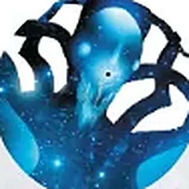

Les plans des cosmologies Marvel et DC
Ce site est réservé aux plans : les cartes de la cosmologie Marvel et de la cosmologie DC, interactives, en version personnelle ou en version officielle quand elle existe. Cliquez sur un personnage ou un lieu pour lire sa biographie, sa famille et ses apparitions.
Les plans Marvel

Marvel · plan 1Les Cosmos
Du Premier au Huitième Cosmos
 Marvel · plan 2
Marvel · plan 2L’Arbre
Le Mystère & la Qlippoth
 Marvel · plan 3
Marvel · plan 3Les Axes
Les huit Ur-Diviseurs
 Marvel · plan 4
Marvel · plan 4Les Firmaments
Neuf firmaments, un seul récit
 Marvel · plan 5
Marvel · plan 5L’Omnivers
Coupe de la réalité Marvel
Marvel · plan 6Les Familles
Parents, enfants et fratries du cosmos
 Marvel · plan 7
Marvel · plan 7Les Royaumes
Yggdrasil, la galaxie et les dimensions
 Marvel · plan 8
Marvel · plan 8La Chronologie
Soixante ans de cosmos
 Marvel · plan 9
Marvel · plan 9La Magie
Dieux anciens, Vishanti, seigneurs des dimensions et démons
Les plans DC
 DC · plan 1
DC · plan 1L'Orrerie des mondes
La carte du Multivers (The Multiversity)
 DC · plan 2
DC · plan 2La Création
Du Survide à la Terre
 DC · plan 3
DC · plan 3Le Spectre émotionnel
Neuf lumières, leurs entités et leurs Corps
 DC · plan 4
DC · plan 4Les Endless
Night, Time, leurs sept enfants et le Rêve
 DC · plan 5
DC · plan 5Le Quatrième Monde
New Genesis, Apokolips et leurs familles
 DC · plan 6
DC · plan 6La Magie
L'Ordre et le Chaos, les colères divines, les magiciens
 DC · plan 7
DC · plan 7Les Crises
Quarante ans de crises et leurs acteurs
 DC · plan 8
DC · plan 8Les Forces
La Speed Force, le Vert, le Rouge et la Pourriture, les dimensions
 DC · plan 9
DC · plan 9Le Ciel et l'Enfer
La Présence, ses anges, Lucifer et Elaine Belloc
Comment lire les plans
En anglais
Les personnages et les lieux portent leur nom anglais d’origine ; le nom français figure dans chaque fiche.
Mon plan ou officiel
Le bouton « Officiel » retire les constructions de fans et affiche la planche officielle publiée quand elle existe.
388 comics cités
Premières apparitions, créateurs et familles sont relevés sur les wikis Marvel et DC. Voir les sources →